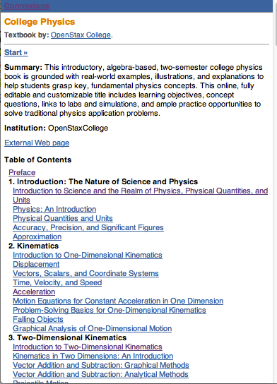
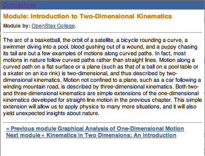
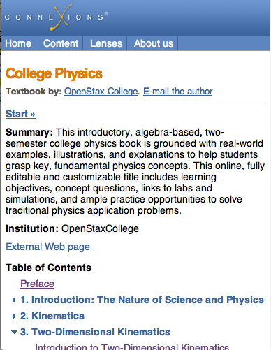
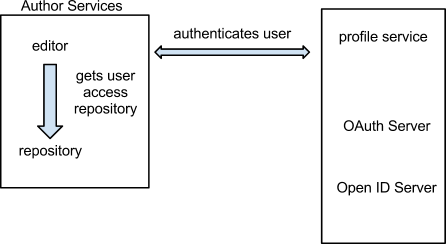

Connexions Rewrite Design Meeting Notes
These are the notes of the daily design meeting for the CNX Rewrite project. The meetings are held Monday through Thursday at 10 am CT.
June 20, 2012
Sprint 3 Planning (Cont'd)
Drag and Drop feature issue: TinyMCE is not passing on mouse event to jquery.
TinyMCE may need to be customized beyond writing new plugins. If we need to customize the tinyMCE code itself, we need to try and do it in a way that is maintainable and updatable. This could be difficult in JavaScript.
Drag and Drop feature is found in other editors for blockish contents; i.e moving slides, images, etc. We want to have it in tinyMCE to keep the user from pasting which adds complexity.
Possible suggestion - use a tree view of the document; able to drag and drop title and label to different sections.
We need to decided on one editor. One that is similarly licensed to our current editor to ensure that it is usable with out other code.
We also need to fix copy and paste feature. Even if we code the drag and drop. Users will use copy and paste. It's what they know from other editors.
We don't want to lose bullets, bold, or italics when the user does copy and paste. We may lose sections. Things lost should be lost completely and not partially.
Cross site scripting issue
Browser is not responding to 200 response it's receiving or returning incorrect response. Possibly because different domains are being used. Should be addressed in a different Sprint.
This needs to be sorted out because we will want the option of subdomains in the future.
June 19, 2012
Sprint 3 Planning
Sprint Dates: June 20th- July 9th
Architecture: diagrams will be made explaining all moving parts.
No bidding or estimating necessary on Phil's cards.
Paul's Card: Implement an OpenID consumer within the flask app allowing any openID server to authenticate a user to the unpub repo
Estimate: 5.
This is just the web server asking who user is, then giving appropriate login.
Updating the repo will go into a message queue.
Editor will know that changes are saved : Ajax will pick up and post.
Paul: Implement a robust message queue for all REST changes that will affect unpub repo; Migrate repo functions to become 'listeners' on message queue
Do we actually need a message queue today?
Yes eventually, solves storing issues, and testing repo.
Only publishing will be in parallel.
Implement, but don't use if part of Plone.
What kind of guarantee do we want so that when user saves, it actually saves?
Advantages of messaging queue - robust, no code necessary, all questions answered. Can be turned off.
UseCase and Architecture should be addressed before message queue.
Message queue = Sprint 4.
Authentication service: is it time to populate with existing users?
We don't necessarily need an OpenID client/server as well as OAuth client/server.
Need client side and authorization to be completed first.
Paul's Card: Implement an OpenID server
Estimate #: 13.
EIP: takes too much time to save. No safe way to fix without messaging queue. could be faster.
TinyMCE: there will not be much validation.
Save as html because that's what was written. Only go to CNXML if switching editors.
Should have outsiders test new editing before release to ensure significant improvement.
New repo needs to be much faster.
New editor will be faster: Asynchronous. Saving will take longer, but editing will be allowed faster.
Only integrating new editor with Plone; not the remainder of the authoring tool.
Able to log what people are doing in the editor to have a better idea of what users are doing.
Adding new javascript editor that will work with Plone authoring tool.
Rhaptos module editor is the unpublished repository in Plone.
June 18, 2012
Articles
Ed does not agree with everything in the articles he shares with the team. They usually contain something interesting that we might want to discuss. An example is the JavaScript article:
http://blogs.adobe.com/bparadie/2012/05/07/the-pew-pew-manifesto/
What was interesting was
What we need to be careful about is reinventing the wheel. Don't write things in something like CoffeeScript if it is just as easy to use JQuery for the same thing.
Phil brought up the fact that he is using CoffeeScript (http://coffeescript.org/) for the editor. CoffeeScript is a language that is compiled into JavaScript. This lead to a discussion about introducing new technologies.
Introducing New Technologies to Project
Discuss technology as a group before choosing one, so everyone can be aware of which tools are being used, and why it is being used.
It was suggested that Code Reviews can be used to keep an eye on new technologies being added to the project. Code review is very important. CoffeeScript is not statically typed, so everything must be named clearly.
How to handle code reviews
Send comments by email rather than using github tools?
We want code review, but we don't want to grill each other. Do we need to broadcast mistakes on Github.
It's possible to fix things on github and comment privately, but doesn't help the learning process.
Having multiple people view your code can be very beneficial.
Ex: somebody is working on a branch for a sprint, they check each other. Use the branch RSS feed.
Don't want outsiders putting bad comments on code, and etc. Intimidation.
Delicate comments can be emailed.
Most comments can stay on the public record.
Sprint
Tomorrow: Sprint 3.
Dedicate extra time to planning meeting to get cards defined and times estimated.
Document Decisions
Need to document design official decisions.
Probably will be put in github. Similar to project page. Link to design meetings and official desicions.
Monitoring
Example: space issue. Need to monitor in advance so we can know how to react
Fountain:
Monett: has signaling limitations.
Nagios: used by CNX, currently adequate. perhaps in need of refreshing.
CNX also using Munin.
Can continue to use Nagios and Munin. Should be able to monitor in graphite to view trend over time.
June 14, 2012
Tablet Web View
Should be the same as web-view, ideally.
"Hidden" features - not hidden, but must be clicked to be viewed.
Left: table of contents, lenses portlet, recently viewed, tags
Table of Contents should be hidden.
Perhaps as a default, hide table of contents, and have an option to always display table of contents.
Is it necessary to have a separate page for the table of contents, or just go to the first page of the collection?
Make table of contents discoverable rather than hidden.
If we go straight to the first module, you can't tweet the collection.
Most users view the content as a holistic book, thus tweet about the collection rather than module.
Top and bottom social buttons = redundant. We should choose one.
If a user likes a content halfway through, he or she will want the social buttons right on the screen instead of having to scroll somewhere.
Metadata/Reuse and Cite:
Lenses: perhaps make a popup or a button. Doesn't need to be displayed unless clicked. http://cnx.org/lenses
Perhaps a button that incorporates all popups: Lenses, portlets, tags.
Don't want layered popups. Lenses logos will take up too much space.
Images: use a Facebook approach: when an image is uploaded, 4 sizes are created.
Recently Viewed
Perhaps design in a fashion similar to Amazon: Other users viewed this...
When you first look on a module, should have the display of all content features , but a one click button hides everything so the user can just read and view the content.
How important is Recently Viewed? Should we redo or remove?
Hover text.
We need to decide to use either text or icons, but not both.
for example, Google: very short, concise text at the top of the screen in the black bar.
Collection Web View Summary:
1. No Collection page. Go straight to the first module.
2. Table of Contents with hideable option.
3. When in collection context, social buttons point to collection.
4. Collection metadata- popup that has twisties for separate sections. popup triggered from collection context header.
5. Related material button: combine lenses and tags portlets, display both module and collection info.
6. Move Recently Viewed to search/browse; do not display while viewing content.
7. Apply #6 to Similar Content.
8. Eliminate text by top level content action buttons; be consistent with text or icons for actions within a given context. See Google Docs when a document is open.
June 13, 2012
Functionality of Each Web View
-what should the user see and be able to access on each device
-Feature phone view: Very basic. No wasted space. simple header. see collection and contents. back to collection means going back to collection.


Current m.cnx.org for feature phones
can we have a link to TOC at the bottom? Another option is adding link right under the authors.
Title, blue CNX bar, module, authors, content, glossary at the bottom
Next and Previous options should be seen.
Is the browse option necessary? No one uses it.
We should remove the View Lenses option.
Search will be supplied from Google.
ask Ross about access logs on m.cnx.org.
Smartphone View
Similar to Feature phone version.
Tabs at the top.
Larger header.
Table of Contents behaves in the same way that the web site version does; contains twisties (little blue triangle)

Current m.cnx.org for smartphones
How helpful are the tabs? Frequently do not work.
We can remove About Us page, perhaps.
Are Lenses and Browse useful on a smart phone?
We should make site more "smart-phone-esque". It should look like an app rather than a webpage.
Most people are not finding content by browsing. Using a large search bar would be more efficient.
Books do not have unique covers - people get confused. All collections look the same.
If authors were allowed to choose a random image from their module or collection as the cover. If not, icons will be assigned.
Phase 2 suggestion: Cover Creator.
Need to make table of contents more readily available (slide out or pop out). That way we can be able to use more ajax and javascript.
Must be able to scroll.
Look into Bootstrap. http://twitter.github.com/bootstrap/
Tablet View
Should be very close to the full site.
Little to no changes should be made.
Master/Slave option: chapter TOC on one side, module on the other when in landscape.
don't display table of contents. Perhaps use a button.
We want content to main display of the page.
Recently Viewed, Similar content,
Perhaps we should change to "most people who looked at .... also looked at"
Is similarity still viable? How accurate?
Current algorithm- performance issue (sometimes completely wrong), inefficient. Accuracy issue.
Search engine will use html from tablet, so we need enough links in html so that site is seen as optimally interconnected.
Google is capable of indexing the ajax.
If Google indexed entire site, it wouldn't matter if Recently Viewed was retrieved.
June 12, 2012
Web View
Have been planning to use Pyramid, which comes with TAL. Marvin thinks Django might be a better way to go -- more support, google app engine. Big sites running Django -- https://docs.djangoproject.com/en/dev/topics/templates/ big websites run by Django: http://stackoverflow.com/a/1907034/756056
What is in the webview?
Might want to consider architecting the webview so that it can eventually be coordinated better with the epub and pdf versions -- same numbering and similar styling. Teachers and learners always ask for this and struggle with how different they are. Phil provided some notes about such which is included at the bottom of the post.
Web templates and policies:
Want to come up with a set of policies and review processes for the web templates do we want:
Phil’s notes about making the formats more congruent: Same CSS for Different Formats
When collection context is known we could inject "counter-reset: chapter 3, section 2, exercise 12, custom-exercise: 45" so numbering is correct.
https://github.com/philschatz/oer.epubcss allows CSS "features" to be "baked into" formats that don't normally support them. For example: epub1 doesn't support counters (for numbering sections/exercises), Some browsers don't support collating elements (move-to).
The CNXML to HTML doc has some notes in it: https://docs.google.com/document/d/1E2RGJf0kHdgWOd2590VGmv9YixgmDFo-gX3xlbLGgM0/edit?pli=1
Some editing/authoring stuff that came up in the conversation
June 11, 2012
User Security (from Article)
-Open ID people
-force a password change on users
- currently, passwords stored in Plone in hash.
- old users will have option of keeping or changing password. Encouraged to change.
- knowing that encrypted with Sscrypt is not a problem.
-Use countdown. “Change password in the next X days”.
-eternal nag - encouraged to change password every time one logs in.
-Users:
1. use existing Plone hash (after examination)
2. Run through scrypt with 128 bit salt
-all passwords handled through the same path, just with different origins
-use same code whether accessing through Plone or open ID user.
-same module from same code base; different paths
-1 code base on 1 server because on Open ID.
- Extra amount of time, with some users using hash 1 and some using hash 2.
-If not all users change passwords, there will be a small delay.
-Slow transition from scrypt/hash to scrypt/plaintext.
Incorrect Login
-currently, when password is incorrect, we return id and no password. We shouldn’t return any information.
-If we open up as Open ID repository, we need to be as secure as possible.
-At Chase, url didn’t contain code path.
-attacker would have url that exposes code path.
-need to verify origin of request. If session ID isn’t in database, request dropped. Prevents Man in the Middle attack.
-Nothing is passed as unencrypted parameter.
-SSH and strongly encrypted, no hints if fail would be better than current setup.
-Blog: store salt per hash per user.
-Login Page:
1. use SSH
2. If a failure, do not expose correct ID.
-storing salt with the password=not wise. Will however, prevent rainbow attack.
-If password hashed with user = system salt stored with user salt.
-Must use strong algorithm. If one can attack database, can attack salt.
-Standard - keep salt next to hash.
-Storing salt next to hash prevents attack against all, but not against one individual.
-Security groups.
-Does not matter where salt is stored. Salt for every user = protected.
-Store a salt for each hash, but not in a separate location.
Web View
-need to discuss Pyramid/ TAL.
-allowed to write Python expressions.
-difference between Web View and everything else?
-want Web View to display only
-logic can be in any random template because of TAL.
-html stored (editable version) not the same as html rendered to the browser.
-need a strict policy regarding template allowances.
June 7, 2012
Users
-convert all user IDs to open IDs
-user will be stored in the repository/OAuth server
-structure of profile service : has open ID server and OAuth server
- does editor get permissions from profile service? Editor repository does.
-once server validates source, editor uses own repository.

-storing a profile service for everyone with a login.
-Users stored in...?
-Ask Arjun about not storing users with public content.
-Domain component that may store users.
Article: Password Storage
-http://throwingfire.com/storing-passwords-securely/
-Hacker News top 50 and top 100: super interesting.
-Author suggests many ways to hash and store passwords.
-don’t do linkedin.
-Read for Monday to discuss which Python package to use.
Editing Math
-Rich wants to be able to handle LaTex directly in editor.
-Libraries can be used to convert LaTex to MathML.
-In editor - LaTex can be used; for publishing, must use MAthML.
-don’t want to edit in MathML.
-Should we attempt to keep math imported with LaTex? aka preserve LaTex?
-there exists MathML with text. Math mode in LaTex? Not supported.
-Gustov and American Institute of Math: have textbooks in LaTex, convert to XML and HTML.
-how to clean up in Math mode of LaTex? perhaps “grab math mode?”
-Trollix used for LaTex; Mathjax is for editor only.
-Who knows LaTex? Bryan knew best. May need outside users. involve community.
-Need a list of projects that need assistance from outside users in community. Use GitHub
-Phil: much of content comes in from Word Importer,and MathML is most common in repository. What do we use for editing MathML?
-Is it possible to convert from MathMl to LaTex?
-What if we used MathML, but created annotations in LaTex?
-Need to be able to edit small portion instead of viewing whole document.
-System should support content math.
-Support LaTEx = more potential support for content math.
June 6, 2012
Intro
- Kathy wants to use design and interface ideas for editing and converter (API)
-scheduling a call with TinyMCE to discuss how new system works with core. Consider inviting someone from Peer to Peer.
-Sprint is scheduled for the end of July in Berlin.
Queue
- problem: zip and pdf generation no longer separate; takes too long to generate zip, which is then deleted, leading to pdf failure. when LaTex is used, also fails. locks zip.
-necessary improvements:
locks for complete zip
system integrated less tightly
testable dependencies before running, ask for reenqueue
items published all at once, trigger events simultaneously
ability to freeze in queue, remove from queue, move to the end of queue
Complete Zip Changes
- store in cache when generated
-store files on file system instead of ZODB = quicker access.
PDF Changes
- check if complete zip exists
-if not, re enqueue itself
-get complete zipform from cache
-launch scripts (need API) instead of Zope.
- possibly launch for a shorter time?
-Json format will be the dictionary of dependencies.
Queue Changes
-improve transactional behavior
-add button to remove something from processing queue
Physics Issues
-cannot fix wrapping issue without break
-”=” stretchy over bar sign. Phil’s code change is to detect when trying to replace carat.
Sociology Issues
-Table of Contents: “...0” should be removed. (Phil.)
-Index: 1st page won’t start until 2nd column because of dif tags(sp).
-Phil made index span top of page = issue resolved.